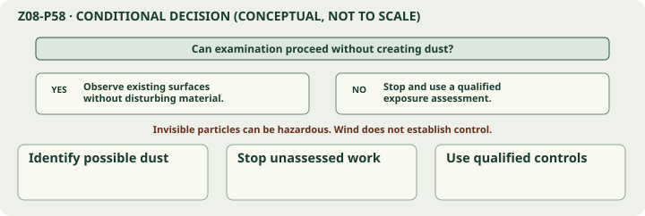

Z08-P58 · Rocks, minerals and materials · New manuscript
Crystalline Silica Dust Controls in Authorized Stone Work
Distinguish non-disturbing observation from authorized work needing assessed silica controls.
When it applies · Supervised authorized geology labs, rock saws, or historical-craft demonstrations.
Equipment · For observation, a camera or notebook. Use only equipment and protective measures specified by the authorized work assessment.

Actions
- Cutting, grinding and fracturing silica-bearing stone can generate hazardous respirable dust, including particles too small to see.[R06]
- Use non-disturbing observation in the field. Any authorized dust-producing work requires a task-specific exposure assessment and appropriate engineering controls.[R06]
- Have a qualified instructor or exposure specialist select the controls and any required protective equipment for that task. A breeze, casual wetting or a respirator by itself does not establish use conditions.[R06]
Failure recognition · Relying on an open backyard breeze or a loose cloth bandana fails to block invisible respirable silica particles.[R06]
Verify · Confirm non-disturbing observation or a task-specific assessment and controls before work.[R06]
Stop or change course · Stop if controls are absent, fail, or were never assessed for the work. Visible dust is a warning cue but its absence is insufficient.[R06]
Evidence and editorial notes
- R06 · NIOSH / CDC · Crystalline Silica Respiratory Dust Hazards (2024)
- Section: Overview; Exposure · Conditions: Silica-bearing material disturbed by cutting, grinding, or similar dust-producing work
Support: Respirable crystalline silica exposure can cause silicosis and other disease. Avoid creating dust during field recognition.
Limitations: Hazardous particles may be invisible. Wind, casual wetting and a mask alone do not establish exposure control. · Conflicting evidence: Conditions are recorded in the A03 audit.
Editorial note: Mandatory Z08 silica/eye safety gate. · Specialist reviewer: Industrial hygienist and geologist
Primary source · checked 2026-11-25
Source lineage · New manuscript (Z08 P16 dust hazards) · Classification · New manuscript.